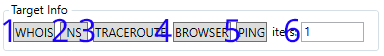
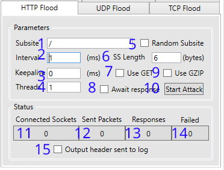
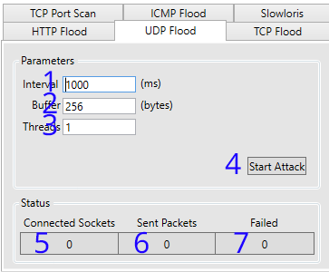
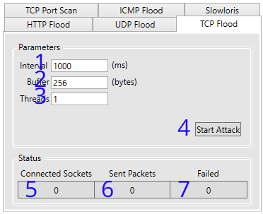
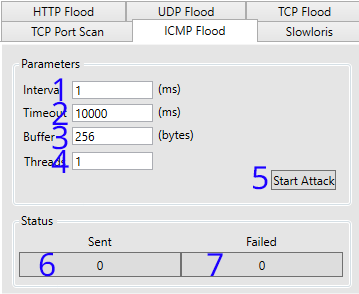
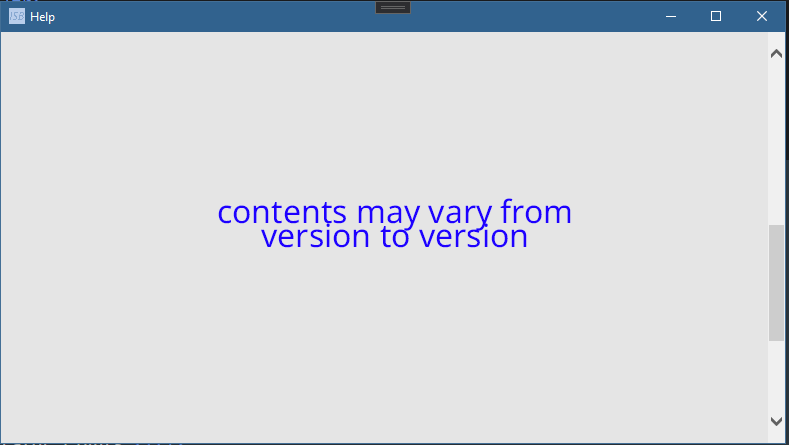

Contacte con nosotros
Discord: abrir en Discord
Correo electrónico: 
Licencia bajo Apache 2.0
ISB (I'm so bored) es una utilidad de pruebas de estrés de red para Windows (.NET 5.0)
| Ataques | Sniffing | Logging | Soporte |
|---|---|---|---|
| Inundación HTTP | Escaneo de puertos | Registro en archivo | Documentación completa |
| Inundación UDP | Búsqueda WHOIS | Registro en el portapapeles | Soporte Discord |
| Inundación TCP | Búsqueda DNS | Registro UI dedicado | Soporte de correo electrónico |
| Inundación ICMP | Traceroute | Supervisión de red | Comprobación automática de actualizaciones |
byte[size] Software: https://github.com/softbytesize
Página principal: https://softbytesize.github.io/ISB/
Lanzamientos: https://github.com/softbytesize/ISB-Releases/releases
Créditos: aquí | Donaciones: bitcoin
Languages: [english] [french] [spanish] (Natively written in English. Translations may be... inaccurate)
Con la ventana principal abierta, navega hasta la sección objetivo Introduce la IP o URL de tu objetivo (#1/#2). Selecciónalo con el botón "Establecer objetivo" (#4). Suponiendo que no aparezca ningún error (en caso contrario: ver errores comunes): Selecciona tu tipo de ataque en la sección ataques Configura las variables de tu ataque (ver: http flood, udp flood, tcp flood, tcp port scan, icmp flood, slowloris). Presione "Start Attack"/"Start Scan" para comenzar, Presione de nuevo para detener el ataque/escaneo.

| 1. Barra de título [Nombre de la aplicación] - [Versión] | 2. Métricas de proceso: (de izquierda a derecha) 2a. Uso de la CPU del proceso: La cantidad de CPU utilizada por la aplicación. 2b. Uso de memoria del proceso: La cantidad de memoria utilizada por la aplicación. 2c. Hilos de proceso: La cantidad de Threads abiertos/en uso por la aplicación. | |
| 3. Véase target para su uso | 4. Véase log para su uso | |
| 5. Ver target info para su uso | 6. Ver attacks para su uso | |
| Véase attacks para su uso | ||
| 7. Ver editores para su uso | 8. Ver grupos para su uso | |
| 9. Ver networkmonitor para su uso |
Sección de la ventana nº 3

| 1. URL o IP de destino. "https://example.com" por ejemplo. | 2. Puerto de destino. Encuentra los puertos más utilizados aquí |
| 3. La IP de destino, cuando se establece (#4 pulsado) | 4Establezca el destino con URL o IP en #1 y el puerto en #2 |
Sección de la ventana #4

| 1. Ventana de registro. Muestra mensajes y errores. | 2. Borra la ventana de registro (no el archivo de registro) |
| 3. Activa el desplazamiento automático de la ventana de registro. | 4. Copia la ventana de registro en el portapapeles. |
| 5. Guarda la salida de la ventana de registro en el archivo (ISB log.log) | 6. Abre el archivo de registro si existe. |
Formato: [fecha hora a/P] > *([título del error]:) [mensaje]
*(condicional)Sección de la ventana nº 5
| 1. Realiza una búsqueda WHOIS en el destino. | 2. Realiza una búsqueda Registros DNS en el destino. Realiza una búsqueda de registros DNS en el destino. |
| 3. Realiza un Traceroute en el objetivo | 4. Abre el objetivo en el navegador* |
| 5. Hace ping al objetivo X veces. (#6) | 6. X veces para hacer ping al objetivo. (#5) |
*El navegador utilizado se puede configurar en la editores (Sección #7 de la ventana)
Sección de ventanas nº 6

| 1. Realiza un HTTP Flood en el objetivo. Para obtener información de uso haz clic aquí |
2. Realiza un Flood UDP en el objetivo. Para información de uso haz clic aquí |
| 3. Realiza un TCP Flood en el objetivo. Para información de uso haz clic aquí |
4. Realiza una exploración de puertos TCP en el objetivo. Para obtener información de uso haga clic aquí |
| 5. Realiza una Inundación ICMP en el objetivo. Para información de uso haga clic aquí |
6. Realiza un ataque Slowloris sobre el objetivo. Para obtener información de uso haz clic aquí |
Sección de Ventana #6 Ataque #1
| 1. Por defecto: '/' Establece el subsitio a utilizar cuando GET (#7) está habilitado* | 2. Establezca el intervalo (en milisegundos) entre el envío de paquetes al destino. |
| 3. Establezca el tiempo (en milisegundos) que el servidor de destino debe mantener abierta la conexión | 4. La cantidad de hilos que la aplicación debe utilizar para atacar el objetivo |
| 5. ¿Usar un subsitio aleatorio? La longitud de la cadena aleatoria se puede cambiar en #6 | 6. Subsitio aleatorio (#5) Longitud en bytes Más alto = más lento (más datos) / Más bajo = más rápido (más tráfico) |
| 7. ¿Utilizar protocolo GET? Por defecto es el protocolo POST. | 8. ¿Hay que esperar a que el servidor responda a la última petición enviada? |
| 9. ¿Deberíamos declarar la codificación GZIP en nuestras cabeceras? 'Accept-Encoding: gzip, deflate' | 10. Inicia/Detén el ataque |
| 11. Sockets conectados con éxito | 12. Paquetes enviados correctamente |
| 13. Respuestas del objetivo recibidas (si #8 está configurado) | 14. Sockets/Packs que han fallado al abrir/enviar |
| 15. ¿Cabeceras de salida enviadas a la ventana de registro?(Sección de ventana nº 7)** |
*Ejemplo: '/search?q=' Utilizado junto con Subsitio aleatorio (#5) y Usar GET (#7) sondeará continuamente el objetivo con una consulta de búsqueda aleatoria.
**Cuando se activa; esto causará falta de respuesta y el bloqueo de la aplicación. Es un problema conocido Por favor no lo reportes a soporte...
Sección de ventana #6 Ataque #2
| 1. Establece el intervalo (en milisegundos) entre el envío de paquetes al objetivo. | 2. Establece el tamaño del búfer en el paquete. |
| 3. La cantidad de hilos que la aplicación debe utilizar para atacar al objetivo | 4. Inicia/Detén el ataque |
| 5. Zócalos conectados correctamente | 6. Paquetes enviados correctamente |
| 7. Sockets/Packs que han fallado al abrir/enviar |
Sección de ventana #6 Ataque #3
| 1. Establece el intervalo (en milisegundos) entre el envío de paquetes al objetivo. | 2. Establece el tamaño del búfer en el paquete. |
| 3. La cantidad de hilos que la aplicación debe utilizar para atacar al objetivo | 4. Inicia/Detén el ataque |
| 5. Zócalos conectados correctamente | 6. Paquetes enviados correctamente |
| 7. Sockets/Packs que han fallado al abrir/enviar |
Sección de ventana #6 Ataque(ish) #4

| 1. El primer puerto a escanear (1-35565) | 2. El último puerto escaneado (1-35565) |
| 3. El tiempo de espera (en milisegundos) para una respuesta. | 4. Inicia/Detén la exploración |
| 5. Total de puertos ABIERTOS | 6. Total de puertos "desconocido" error presunto ABAJO |
| 7. Total de puertos 'rechazados' error presunto ABAJO | 8. Total de puertos 'timed out' error presumed DOWN* |
| 9. Total de puertos ABAJO | 10. Envía "Puerto X ARRIBA" a la ventana de registro (#4) |
Sección Ventana #6 Ataque #5
| 1. Establece el intervalo (en milisegundos) entre el envío de paquetes al objetivo. |
2. Establece el tiempo de espera de la conexión actual. |
| 3. Establece el tamaño del búfer en el paquete. | 4. La cantidad de hilos que la aplicación debe utilizar para atacar el objetivo |
| 5. Inicia/Detén el ataque | 6. Paquetes enviados correctamente |
| 7. Paquetes que no se han podido enviar |
Sección Ventana #6 Ataque #6

| 1. Establece el intervalo (en milisegundos) entre el envío de paquetes al objetivo. |
2. La cantidad de hilos que la aplicación debe utilizar para atacar el objetivo |
| 3. Inicia/Detén el ataque | 4. Paquetes enviados con éxito |
| 4. Paquetes enviados correctamente | 6. Paquetes que no se han podido enviar |
Sección Ventana nº 7

| 1. Ruta de ubicación del editor de texto. Por defecto es la predeterminada del sistema desde el registro. |
2. Ruta de ubicación si el navegador web. Por defecto es la predeterminada del sistema desde el registro. |
| 3. Abre el Diálogo de archivo para elegir el editor de texto utilizado* | 4. Abre el Diálogo de archivo para elegir el navegador web utilizado* |
*Acepta: exe, .exe, *.exe
Sección de la ventana nº 8

| 1. Inicia la ventana 'Ayuda'. Acceso directo del teclado: F1 [Sugerencia: la ventana Ayuda muestra esta página] |
| 2. Localización de la ventana Acerca de Acceso directo del teclado: F2 |
Ventana de ayuda > Ventana Sección #8-1
*Estás aquí... 50/50 de cómo llegaste aquí*
Acerca de la ventana > Sección de la ventana #8-2

| 1. Muestra el nombre de la aplicación, la versión y el desarrollador. |
| 2. Muestra las licencias en uso. Nota: El uso de este software implica el acuerdo de licencia. |
| 3. Muestra los paquetes utilizados y acredita a quienes ayudan a desarrollar/mantener la ISB |
| 4. Muestra la dirección BTC en la que se aceptan donaciones. ¡¡¡Gracias!!! :) |
| 5. Abre el navegador al repositorio de aplicaciones |
*Estás aquí... 50/50 de cómo llegaste aquí*
Sección de la ventana #9

| 1. Los adaptadores detectados por el monitor | 2. Estado actual del adaptador seleccionado |
| 3. Purga DNS (el resultado se muestra en la ventana de registro) Ejecuta: ipconfig.exe /flushdns |
4. Renueva todos los adaptadores (el resultado se muestra en la ventana de registro) Ejecuta: ipconfig.exe /renew |
Haga clic aquí para ver la última versión.